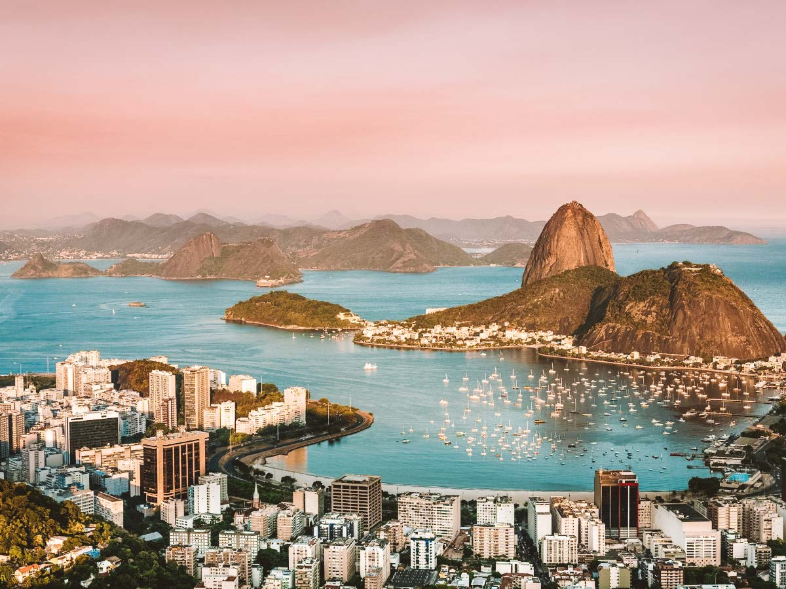

O Rio de Janeiro é uma das cidades mais icónicas do mundo, servindo como o principal cartão-postal do Brasil.
Localizada na Região Sudeste, a "Cidade Maravilhosa" combina uma geografia única entre montanhas e o mar com uma herança histórica e cultural riquíssima.
Fundada em 1565 pelos portugueses, o Rio de Janeiro foi a capital do Brasil durante quase 200 anos (1763-1960). Entre 1808 e 1821, foi também a sede da Corte Portuguesa, tornando-se a única cidade fora da Europa a ser capital de um reino europeu. Esta história reflete-se na arquitetura do centro da cidade, com edifícios como o Paço Imperial e o Teatro Municipal.
O Rio é o segundo maior centro económico do Brasil e um polo importante de energia (petróleo e gás), tecnologia e comunicações. O turismo é um motor essencial da economia local, focado tanto em lazer quanto em grandes eventos internacionais e conferências.
voltar para página inicial